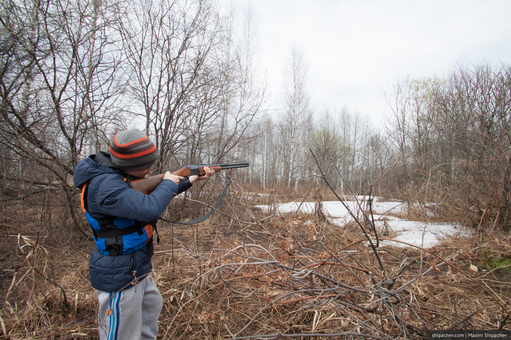
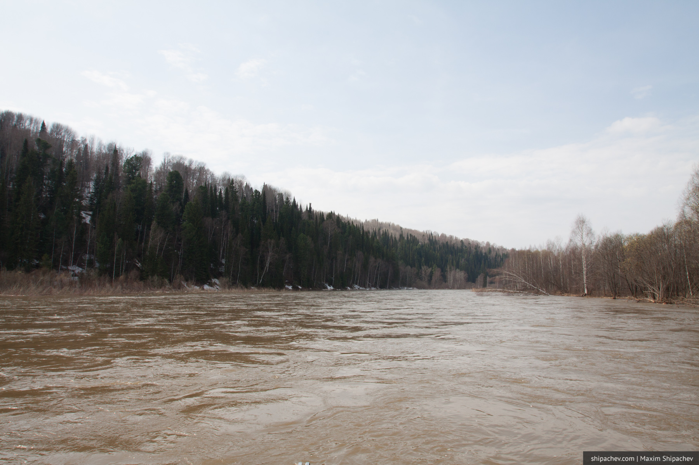

Отметили с друзьями приход весны походом до реки Тайдон на моторной лодке. Море воды, море клещей, несколько фотографий.
С клещами ситуация ухудшается с каждым годом. Всё детство мы ходили в лес и думать не думали ни о каких клещах. Раз в год, примерно, кусали, но никого это особо не беспокоило. Сегодня вышли впятером в лес на 3 минуты. За 3 минуты четверо из нас сняли с себя по клещу, причём пятый снял с себя клеща, когда сходил на берег до этого на минуту.
Пройденное расстояние — 227 километров.

